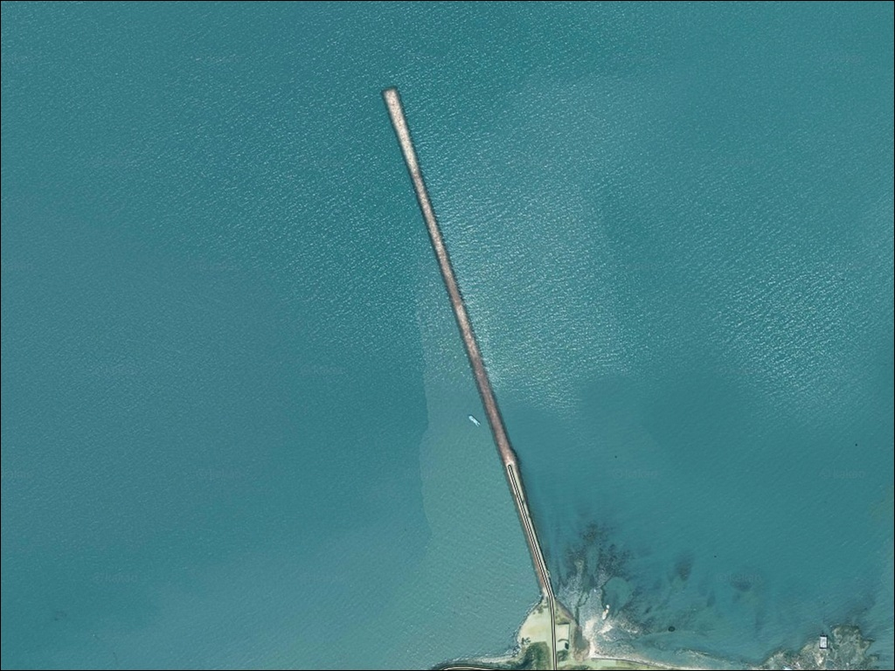
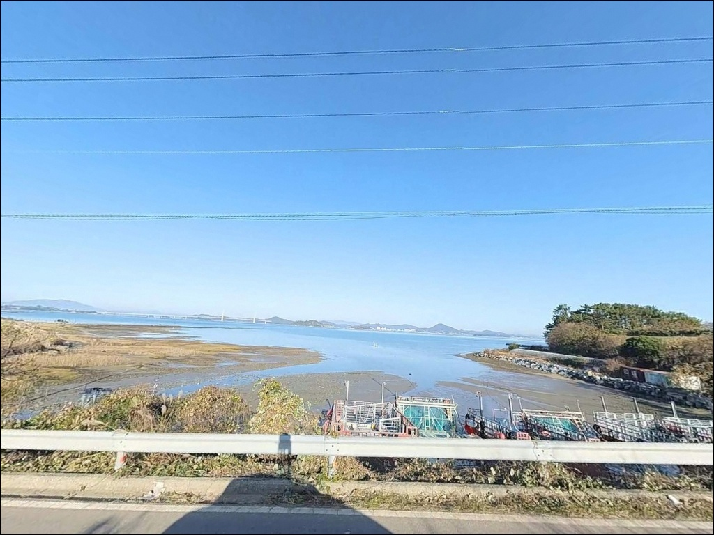
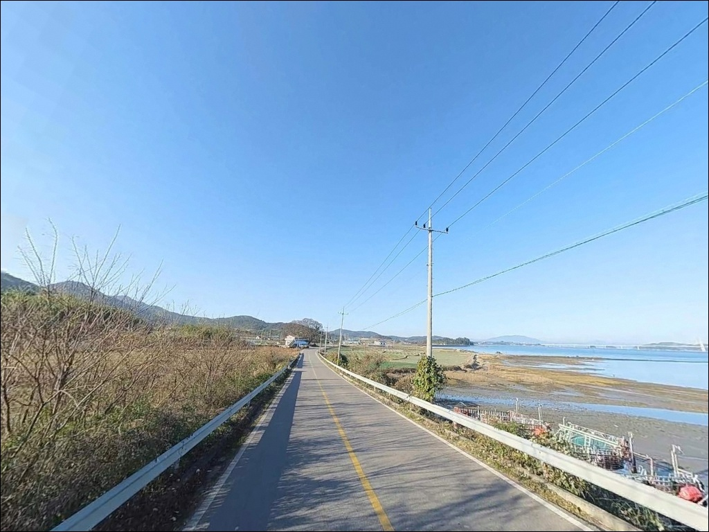
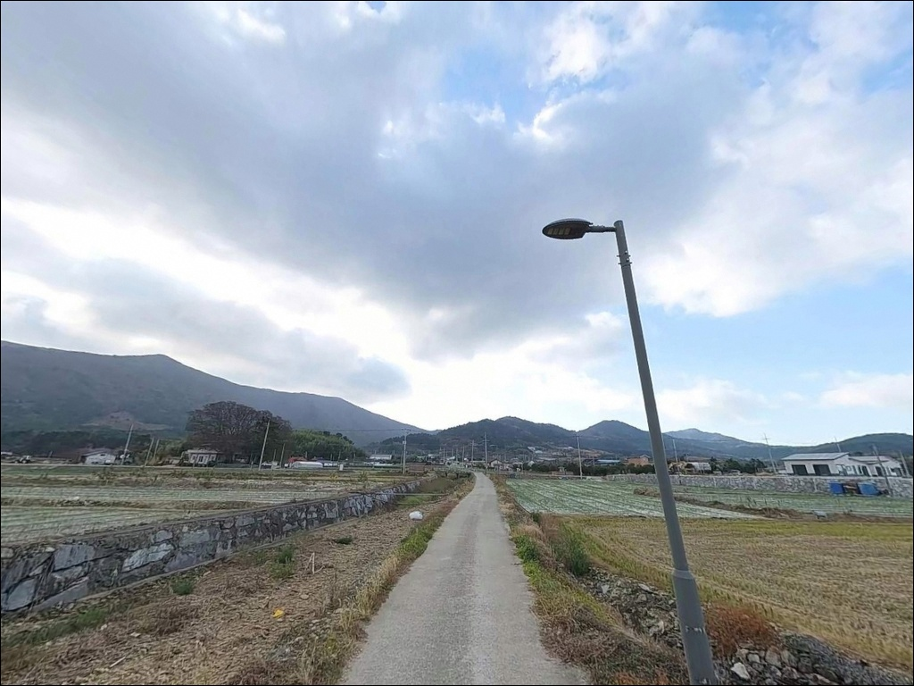
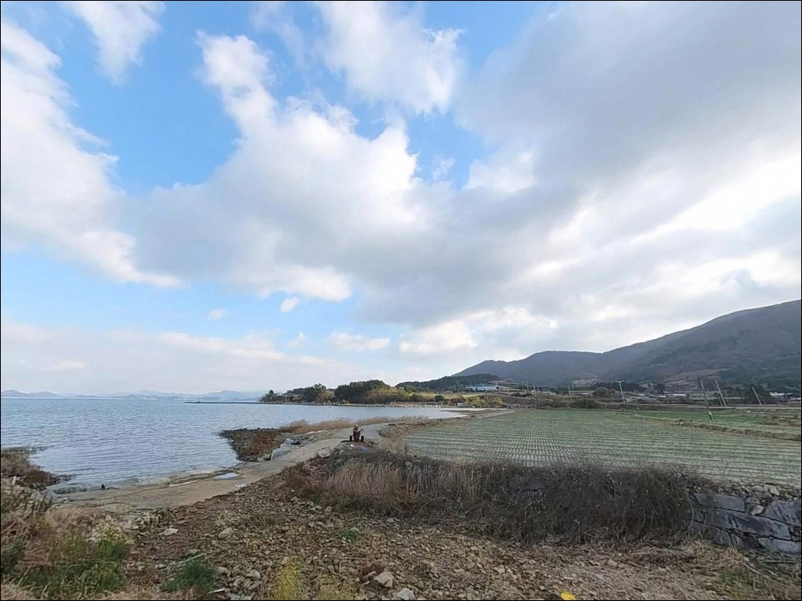
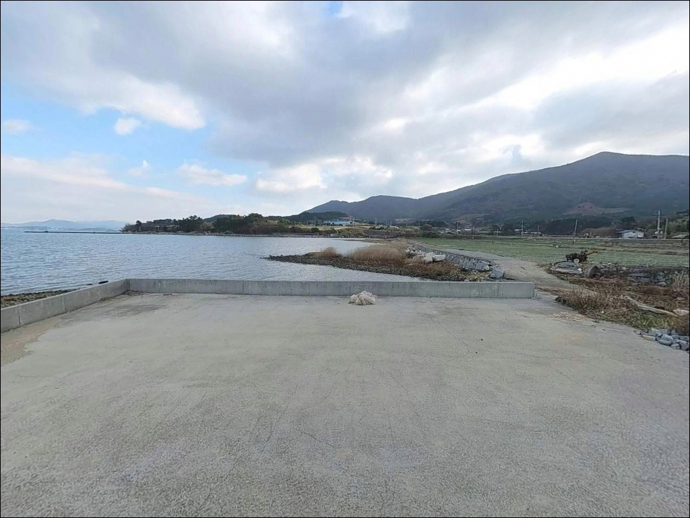
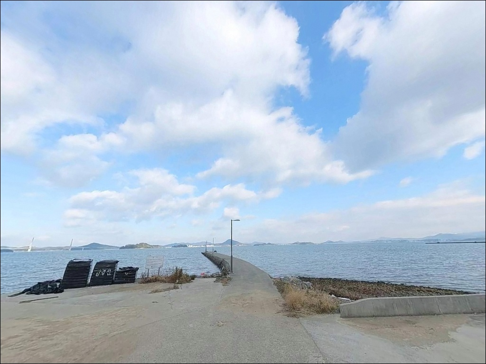
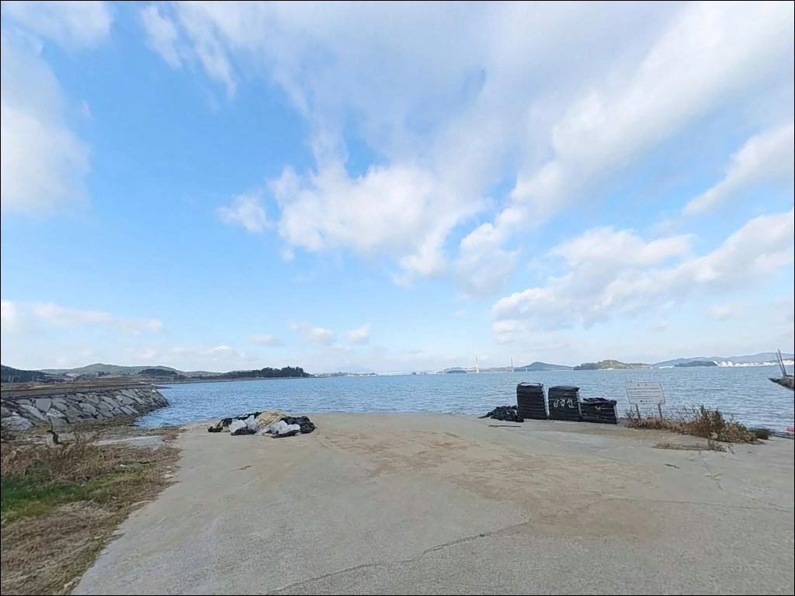
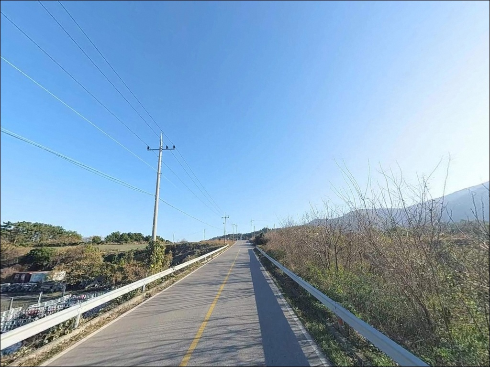

만조 수심 8m 여밭을 노리는 거금도 석정리방파제의 감성돔 찌낚시
이 페이지에는 광고(제휴 링크 포함)가 있으며, 광고 링크를 통해 구매하면 운영자가 판매 수익 또는 수수료를 받을 수 있습니다. 포인트 사진: 카카오맵 스카이뷰·로드뷰. 이 페이지의 지도·사진 이미지는 카카오맵의 실제 서비스 이미지와 다를 수 있습니다.


포인트 안내
석정리방파제
전남 고흥군 금산면 석정리 551-1
외항이 남해 외해로 직접 열린 방파제에서
바람과 파도 방향을 확인하지 않고 자리를 잡으면
채비 운용 자체가 어려워집니다.
석정리방파제는 방파제 끝단으로
외해 조류가 분명하게 통하는 구조라,
기상 조건 파악이 낚시 성패의 첫 번째 판단이 되는
포인트입니다.
전남 고흥군 금산면 석정리,
거금도 북부 해안에 자리한 석정리방파제는
2011년 거금대교 개통 이후
육지에서 차량으로 접근할 수 있게 된 섬 포인트입니다.
방파제 외항 쪽에는 테트라포드가 배치되어 있고,
내항은 선박이 닿는 직벽 구조로
낚시 방식에 따라 자리를 달리해야 하는 구조입니다.
이 글은
석정리방파제의 진입 여건, 낚시 지형 분석,
어울리는 낚시 방식에 집중합니다.
조황 단정이나 특정 어종 보장은
이 글의 범위에 포함되지 않습니다.

1. 진입 동선과 포인트 접근성
거금도 진입은 녹동항 방향에서
소록대교와 거금대교를 연결해 들어오는 경로가 기본입니다.
섬 내부에는 일주도로가 정비되어 있으며
북부 해안 방향 포장 상태도 유지되는 편입니다.
석정리까지의 마지막 진입로는
마을 내부 1차선 도로를 통과하는 구조로,
협소 구간이 일부 포함되어 있습니다.
방파제 시작 지점부터 끝단까지
폭이 일정하게 유지되어
승용차와 SUV의 이동·회차가 가능한 구조입니다.
주차는 방파제 진입 전 공터와
방파제 위 갓길을 활용하는 방식이 기본이며,
대형 캠핑카가 아닌 이상 주차 공간 여유는
비교적 넉넉한 편입니다.
마을 진입부 도로가 좁으니
초행이라면 내비게이션 목적지를 직접 입력한 뒤
진입 전에 도로 폭을 위성지도로 먼저 확인해 두는 편이
안전합니다.

2. 차박 환경과 야간 체류 여건
석정리는 거금도 내 소규모 마을 구역으로
민가 밀집도가 낮은 편입니다.
야간 차량 통행이 적어 정적인 환경이 유지되며,
방파제 위 공간이 확보되어 있어
낚시 후 단기 체류 용도로는 무난한 여건입니다.
다만 방파제 자체 조명은 밝지 않습니다.
집어등이나 고광도 랜턴을 갖추지 않으면
야간 낚시와 이동 모두 불편해집니다.
거금도는 섬 지역 특성상 야간 강풍이 빈번한 편이라
텐트 등 외부 장비 설치 시 고정에 각별히 신경써야 합니다.
방파제 끝단 선박 접안 구역은
어민들의 작업 공간이기도 합니다.
장비를 넓게 펼치지 않는 것이
이 포인트에서 지켜야 할 기본 매너입니다.


3. 주변 편의시설 및 인프라 현황
석정마을 회관 인근에
화장실 시설이 약 300m 거리에 있습니다.
편의점이나 식당은 방파제 바로 주변에서
기대하기 어려운 규모의 마을입니다.
금산면 소재지까지 차량으로 7분 거리에
농협 하나로마트와 식당가가 있어,
출발 전 이곳에서 식자재와 소모품을 보충하고
진입하는 방식이 현실적입니다.
낚시 용품은 금산면 또는 녹동항 방향
주변 낚시점을 이용하되,
영업 여부는 방문 전 확인이 필요합니다.
응급 상황이 발생할 경우
가장 가까운 의료시설까지 거리가 상당하므로
비상약품과 충분한 수분은
출발 전에 완비해야 합니다.

4. 방문 전 반드시 챙겨야 할 준비사항
석정리방파제 방문 전
가장 먼저 확인해야 할 것은 물때입니다.
거금도 일대는 간조 시 수심이 급격히 얕아지는
포인트가 분포하는 해역입니다.
바다타임에서 금산면 기준 물때를 확인하고,
만조 전후 타이밍을 낚시 입장 시각에 맞추는 것이
이 포인트의 기본 전략입니다.
외항이 외해로 직접 열린 방파제는
바람 방향이 낚시 자리 선정의 첫 번째 판단 기준이 됩니다.
풍속이 강하거나 파고가 높은 날에는
외항·끝단 접근을 피하고
내항 직벽 쪽으로 자리를 옮기는 판단이 필요합니다.
외항 테트라포드 구간은
이끼가 끼어 미끄러운 경우가 많습니다.
테트라포드 위 직접 진입은 피하고,
방파제 위에서 외항 방향으로 채비를 운용하는 것이
안전과 조과를 동시에 챙기는 방식입니다.
구명조끼는 주간과 야간 모두 착용이 기본입니다.

5. 외항과 내항, 자리에 따라 낚시 여건이 달라지는 구조
석정리방파제의 핵심 구조는
외항이 남해 외해로 직접 노출되어 있다는 점입니다.
방파제 끝단 기준 만조 시 수심은 6~8m 내외이며,
바닥은 모래와 여밭이 혼재하는 구성입니다.
어패류와 소형 어류의 서식 여건이
고르게 갖춰진 지형 조건입니다.
외항 쪽은 조류 흐름이 분명하게 형성되어
회유성 어종이 통과하는 길목 역할을 합니다.
외항 방향 석축 경계면 주변이
에깅 채비 탐색 구간으로 알맞으며,
방파제 끝단에서 원투로 60m 이상 내보내면
바닥 어종을 노리기에 유리한 지점에 닿습니다.
내항은 잔잔한 수면을 유지하는 직벽 구조입니다.
생활낚시와 루어 탐색에 적합한 여건이며,
기상이 나빠 외항 자리를 쓰기 어려울 때
대안 자리로 활용하기에 나쁘지 않습니다.
최신 조황은 출조 전에 거금도 방파제 조황으로
반드시 검색해 보시기 바랍니다.


6. 석정리방파제에 어울리는 낚시 스타일
이 포인트에서 가장 기본이 되는 방식은 찌낚시입니다.
외항 방향으로 조류를 태워 흘리면
가을철 감성돔을 노리기에 맞는 조건을 갖추고 있습니다.
0.8~1호 구멍찌 반유동 채비로
수심 6~8m 구간을 공략하는 방식이
이 일대 방파제의 기본 공략 패턴입니다.
에깅도 잘 어울리는 방식입니다.
9월부터 11월 사이에는 갑오징어와 주꾸미가
방파제 전역에서 반응하는 시기로,
외항 석축 경계면과 테트라포드 주변을
에기로 천천히 탐색하는 것이 핵심입니다.
만조 전후 수심이 확보되는 타이밍에
바닥 석축 경계를 집중 공략하는 방식이 유효합니다.
원투낚시도 이 포인트 구조에 맞는 스타일입니다.
내항보다는 외항 방향으로
60m 이상 원거리 투척 시
도다리, 붕장어, 보리멸의 반응을 기대할 수 있습니다.
야간 원투에는 붕장어가 움직이는 시간대를 노리는 것이
이 해역의 패턴에 맞습니다.

7. 대안 포인트와 플랜 B 동선
석정리방파제 조건이 여의치 않을 때
가장 먼저 이동할 대안은
익금해수욕장 방파제입니다.
규모가 더 크고 주차 여건이 우수하며
거금도 내에서 접근성도 나쁘지 않습니다.
바람 방향에 따라 석정리 외항이 불리해지는 날
익금 방향으로 이동하면 자리 여유를 더 확보할 수 있습니다.
금산항 메인방파제도
같은 금산면 해역의 대표 포인트로 꼽히는 곳입니다.
석정리보다 방파제 규모가 크고
다양한 낚시 방식을 병행하기에 유리한 구조입니다.
이쪽이 여의치 않을 때
금산항을 기점으로 삼아 이동하는 동선이
이 권역에서 효율적입니다.
차박 대체 공간으로는
거금도 생태공원 주차장이 있습니다.
화장실과 산책로가 갖춰진
거금도의 공식 차박 명소로,
낚시 외 숙박 여건을 우선한다면
이쪽을 기점으로 잡는 편이 편리합니다.

외해 조류와 여밭 바닥,
두 조건을 갖춘 거금도 북부 포인트
찌낚시로 감성돔을 노리거나
에깅으로 갑오징어를 공략하는 낚시인이라면
석정리방파제의 지형 조건은 잘 맞는 구조입니다.
만조 시 6~8m 수심, 모래와 여밭 혼재 바닥,
외해 조류가 통하는 끝단 구조가
복합 낚시를 가능하게 합니다.
반면 기상 변화가 빠른 섬 특성상
바람과 파고 확인 없이 외항에 자리를 잡으면
채비 운용이 어려워질 수 있습니다.
물때 확인, 기상 점검, 진입로 사전 파악,
이 세 가지를 갖추고 들어가면
거금도 북부에서 조용히 낚시와 차박을 겸하기에
나쁘지 않은 포인트입니다.
석정마을의 조용한 야간 분위기와
방파제 위 차량 접근 가능한 여건 덕분에,
낚시를 마친 뒤 자리를 정리하고
하룻밤 머무는 차박 낚시 일정을 짜기에
거금도 북부에서 발견해 둘 만한 포인트입니다.